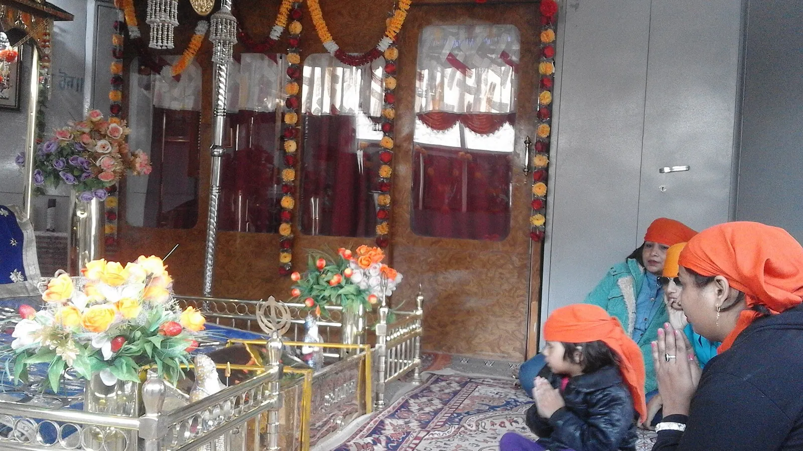
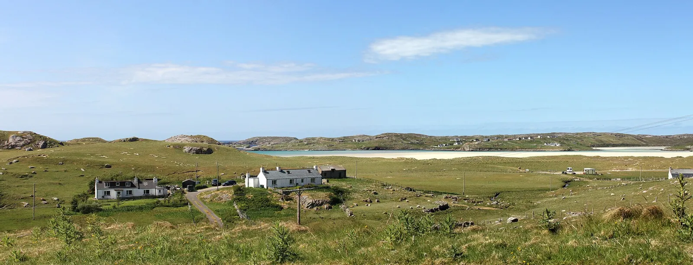
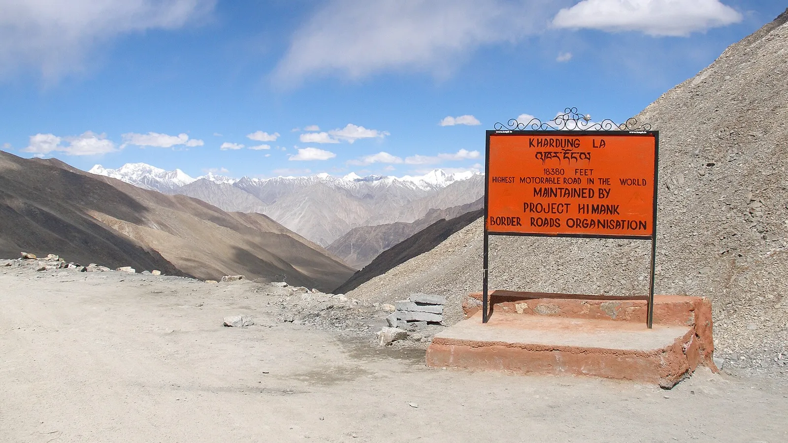
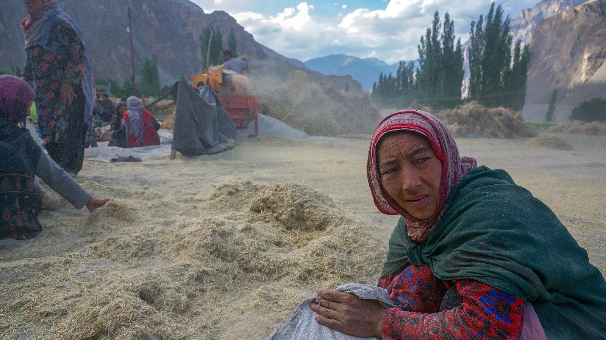
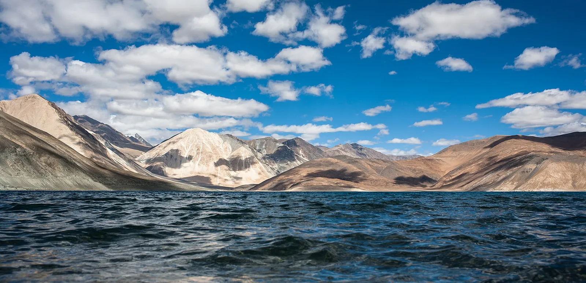
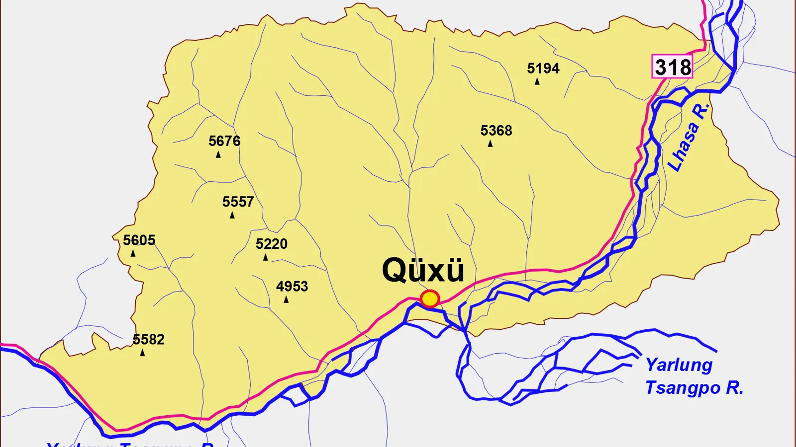
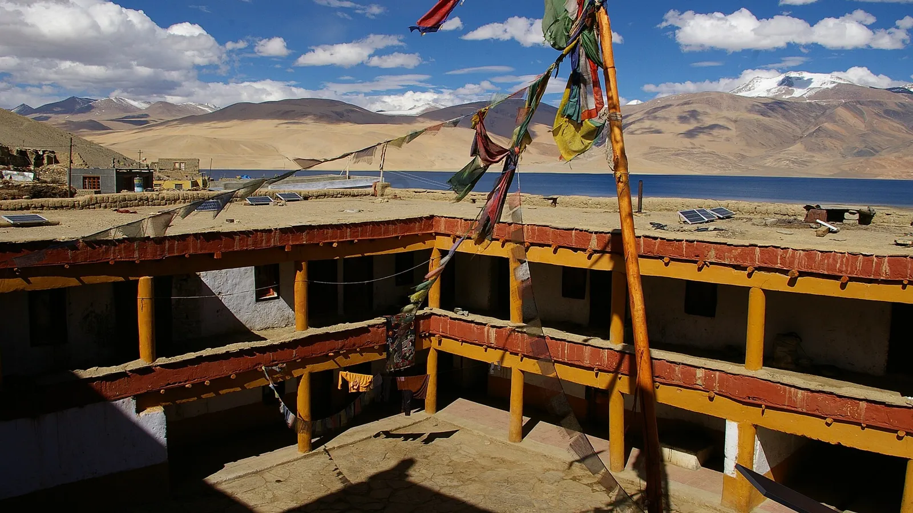
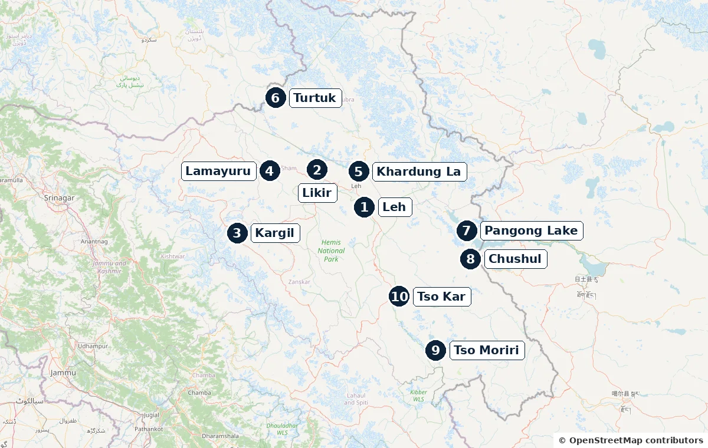

This route follows Ladakh's old trading paths. You acclimatise gently in the Sham Valley, visit the Brokpa villages of Dha-Hanu on the way to Kargil, then cross Khardung La to Nubra and drive to Turtuk, a Balti village that was part of Pakistan until 1971. From Pangong the road runs along the Chinese frontier through Chushul to Tso Moriri, and back to Leh past the salt lake of Tso Kar.
See it for yourself
Photos from the journey










Where you go
The journey on one map

LehLikirDhaKargilLamayuruLehKhardung LaHunderTurtukPangong LakeChushulTso MoririTso KarLeh
Day by day, in short
Daily travel brief
Distances are by road for the whole day. The full plan with timings comes with your detailed itinerary.
-
1
Fly into Leh and rest
- Rest and acclimatise: do no sightseeing today.
- We start gently tomorrow and go lower, which helps your body adjust.
-
2
Down the Indus to the Sham Valley
- Sham is lower than Leh: an easy second night for acclimatisation.
-
3
Dha-Hanu and Batalik to Kargil
- Dha and Hanu villages: ask before photographing anyone.
- Kargil town is mainly Shia Muslim.
-
4
Mulbekh, Lamayuru and Alchi back to Leh
Lamayuru Monastery Alchi Monastery
- Alchi Choskor: no photography inside the Alchi temples.
- Tomorrow crosses Khardung La.
-
5
Over Khardung La to Nubra
- Khardung La: stay no more than 15 to 20 minutes at the top.
- Hunder dunes: camel rides are paid directly.
-
6
Turtuk, the Balti village on the Shyok
- Turtuk village: turtuk is a conservative Muslim village.
- Turtuk has a small royal house museum run by the family.
-
7
Nubra to Pangong Lake
- A very cold night.
-
8
The frontier road through Chushul to Tso Moriri
Rezang La War Memorial Tso Moriri
- Chushul and the 1962 war memorial: this road follows a sensitive frontier.
- Tso Moriri is the highest night of the trip.
-
9
-
10
Fly home from Leh
- Transfer to Leh airport: be at the airport 2 hours early.
- Keep a buffer day before international connections.
Local know-how
Travel hacks from our desk
Altitude comes first
Leh is at about 3,500 m. Rest completely on the first day, drink 3 to 4 litres of water a day, avoid alcohol and smoking, and climb slowly. Ask your doctor about Diamox before you travel. Tell us about heart, lung or blood-pressure conditions before booking.
Phones
Only postpaid connections from other states work in Ladakh; prepaid SIMs from outside do not. Jio and Airtel postpaid have the widest coverage. Signal is weak or absent at Pangong, Tso Moriri and in Zanskar.
Layers, sun and monasteries
Even in summer it can be below zero on the passes. Carry a down jacket, cap, gloves, sunglasses and strong sunscreen. In monasteries cover shoulders and knees, remove hats, walk clockwise and ask before photographing monks.
Cash
ATMs work in Leh and Kargil only, and not always. Carry enough cash for the whole trip outside Leh. UPI works where there is signal.
UPI, cards and cash
UPI works almost everywhere, even at small stalls. Keep some cash in INR 100 and 200 notes for temples, parking, tips and places where the network is weak.
Temple and shrine etiquette
Cover shoulders and knees. Remove shoes where asked, and carry socks for hot stone floors. Leather belts and bags are not allowed inside some Jain and Hindu temples. Ask before photographing people and inside shrines.
Water and street food
Drink sealed bottled or filtered water only. Choose busy stalls where food is cooked in front of you, and skip cut fruit and ice from roadside stalls.
Plugs and tipping
Plugs are Indian three-pin and two-pin, 230 volts. Tipping drivers and guides about INR 300 to 500 a day is appreciated.
When to go
Best time to visit for this journey
September: all roads open, clear skies and calm lakes.
June to September. Tso Moriri camps open from about late May to September; Pangong is busiest in June and July.
The package
What's included
Included
- 9 nights in hotels and camps, with breakfast and dinner
- Private SUV with driver for the whole tour
- Environment-fee permits for Indian citizens
- 24/7 support from Blue Diamond Voyage
Not included
- Flights to and from Leh
- Monastery entry fees and camel rides
- Lunches
- Costs from road blocks or flight cancellations
- Travel insurance
The detailed itinerary
Some journeys are planned. Ours are crafted.
The full 10-day plan is ready: hour-by-hour timings, drive times, temple dress codes, food for your diet and a route map for every day. Tell us your dates and your city, and we'll send it to you on WhatsApp, shaped around you.
- Hour-by-hour timings
- A route map for every day
- Hotel and room details
- Visa and entry steps
- Vegetarian and Jain dining
24/7 travel desk+91 97148 59797+91 98242 21400
Photo and map credits
- Kushok Bakula Rimpochee Airport: caffeineAM, CC BY 2.0, via Wikimedia Commons
- Gurudwara Pathar Sahib: Lalitgupta isgec, CC BY-SA 4.0, via Wikimedia Commons
- Dha Village: Jo Turner, CC BY-SA 2.0, via Wikimedia Commons
- Mulbekh Monastery: Jparande, CC BY-SA 3.0, via Wikimedia Commons
- Khardung La: Vyacheslav Argenberg, CC BY 4.0, via Wikimedia Commons
- Turtuk: KartikiGonsalves, CC BY-SA 4.0, via Wikimedia Commons
- Pangong Lake: KennyOMG, CC BY-SA 4.0, via Wikimedia Commons
- Chushul: Aymatth2, CC BY-SA 4.0, via Wikimedia Commons
- Korzok Monastery: Andreas' Photos, CC BY-SA 2.0, via Wikimedia Commons
- Kushok Bakula Rimpochee Airport: caffeineAM, CC BY 2.0, via Wikimedia Commons
- Maps: © OpenStreetMap contributors; road routes by OSRM.